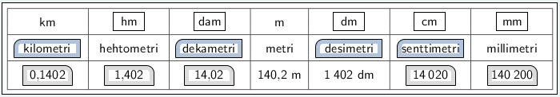
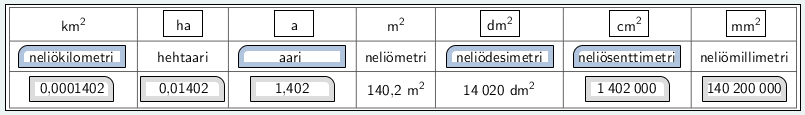

MA7 Jakso 5: Malliratkaisut
1. Kertausta: Desimaaliluvut
Tehtävä 1.3: Desimaaliluvun sanallinen muutos
Tehtävä 1.7: Laskuja desimaaliluvuilla
Laske ilman laskinta.
a) \(\mathsf{4{,}3 + 5{,}6 = 9{,}9}\)
b) \(\mathsf{0{,}75 + 1{,}07 = 1{,}82}\)
c) \(\mathsf{8{,}7 - 3{,}85 = 4{,}85}\)
d) \(\mathsf{9{,}05 \cdot 10 = 90{,}5}\)
e) \(\mathsf{0{,}5 \cdot 0{,}9 = 0{,}45}\)
f) \(\mathsf{3{,}2 \cdot 0{,}3 = 0{,}96}\)
2. Pituusyksiköt
Tehtävä 2.1: Pituusyksikkölämmittely
Kysymys 1 (Vedä kohde kuvan päälle)
Tehtävä 2.4: Pituustehtäviä
Muunna samaan yksikköön, ja laske
a) \(\mathsf{\text{15,3 cm} + \text{452 mm} = \text{15,3 cm} + \text{45,2 cm} = \text{60,5 cm}}\)
b) \(\mathsf{2 \cdot (\text{1 250 m} - \text{0,35 km}) = 2 \cdot (\text{1 250 m} - \text{350 m}) = 2 \cdot \text{900 m} = \text{1 800 m}}\)
c) kolmion piiri, kun sen sivujen pituudet ovat 4,3 cm, 25 mm ja 1,04 dm.
\(\begin{align}\mathsf{p} &= \mathsf{\text{4,3 cm} + \text{25 mm} + \text{1,04 dm}}\\ &= \mathsf{\text{4,3 cm} + \text{2,5 cm} + \text{10,4 cm}}\\ &= \mathsf{17,2 cm}\end{align}\)
d) suunnikkaan piiri, kun sen sivujen pituudet ovat 800 m ja 1,3 km.
\(\begin{align}\mathsf{p} &= \mathsf{2 \cdot \text{800 m} + 2 \cdot \text{1,3 km}}\\ &= \mathsf{2 \cdot \text{0,8 km} + 2 \cdot \text{1,3 km}}\\ &= \mathsf{\text{1,6 km} + \text{2,6 km}}\\ &= \mathsf{\text{4,2 km}}\end{align}\)
Laske, muuta vastauksen yksikkö metreiksi ja pyöristä vastaus yhden desimaalin tarkkuuteen.
e) \(\mathsf{\text{12,3 dm} - \text{3,4 dm} = \text{8,9 dm} = \text{0,89 m} \approx \text{0,9 m}}\)
f) \(\mathsf{8 \cdot \text{250 cm} + \text{212 cm} = \text{2 212 cm} = \text{22,12 m} \approx \text{22,1 m}}\)
3. Pinta-alayksiköt
Tehtävä 3.1: Pinta-alayksikkölämmittely
Kysymys 1 (Vedä kohde kuvan päälle)
Tehtävä 3.4: Urheilukenttien pinta-aloja
Harri mittasi ja laski eri urheilulajeissa käytettyjen kenttien pinta-aloja. Harri sai kentät suuruusjärjestykseen, mutta sotki pinta-alat. Lisäksi ne ovat eri yksiköissä. Muunna kaikki pinta-alat aareiksi (a) ja järjestä ne oikean lajin kohdalle (suuruusjärjestykseen).
| 0,0008 km2 = 8 a | 8200 dm2 = 0,82 a | 0,156 ha = 15,6 a | 162 m2 = 1,62 a |
| 327 600 dm2 = 32,76 a | 0,02 ha = 2 a | 7140 m2 = 71,4 a | 0,00026 km2 = 2,6 a |
| 62 m2 = 0,62 a | 0,0078 ha = 0,78 a | 12 800 dm2 = 1,28 a | 6,7 m2 = 0,067 a |
Kentät suuruusjärjestyksessä:
| 1. | Jalkapallo: | 71,4 a |
| 2. | Pesäpallo: | 32,76 a |
| 3. | Jääkiekko: | 15,6 a |
| 4. | Salibandy: | 8 a |
| 5. | Tennis: | 2,6 a |
| 6. | Padel: | 2 a |
| 7. | Lentopallo: | 1,62 a |
| 8. | Rantalentopallo: | 1,28 a |
| 9. | Sulkapallo: | 0,82 a |
| 10. | Pickelball: | 0,78 a |
| 11. | Squash: | 0,62 a |
| 12. | Snooker: | 0,067 a |
4. Pyöristäminen
Tehtävä 4.3: Pituuslaskuja ja pyöristämistä
Laske ja pyöristä vastaus epätarkimman lähtöarvon desimaalien lukumäärän mukaisesti.
a) \(\mathsf{\text{4,3 m} + \text{2,05 m} + \text{5,42 m} = \text{11,77 m} \approx \text{11,8 m}}\)
b) \(\mathsf{\text{20 km} - \text{5,2 km} - \text{8,5 km} = \text{6,3 km} \approx \text{6 km}}\)
c) Tiina mittasi matkan puistosta koululle polkupyörän mittarilla ja sai tulokseksi 1,4 km. Jaana mittasi matkan koululta kaupalle puhelimen GPS-sovelluksen avulla ja sai tulokseksi 2,85 km. Kuinka pitkä matka on puistosta koulun kautta kaupalle?
\(\mathsf{\text{1,4 km} + \text{2,85 km} = \text{4,25 km} \approx \text{4,3 km}}\)
Vastaus: Matka puistosta koulun kautta kaupalle on 4,3 kilmetriä.
Tehtävä 4.7: Pinta-alatehtäviä ja pyöristämistä
Laske monikulmon pinta-ala. Pyöristä vastaus.
a)

\(\mathsf{A = \text{9,4 cm} \cdot \text{4,7 cm} = \text{44,18 cm}^2 \approx \text{44 cm}^2}\)
b)

\(\mathsf{A = \dfrac{\text{5,6 m} \cdot \text{12,3 m}}{2} = \text{34,44 m}^2 \approx \text{34 m}^2}\)
c) Suorakulmaisen kolmion sivujen pituudet ovat 4,6 cm, 13,2 cm ja 14 cm. Laske kolmion pinta-ala.
\(\mathsf{A = \dfrac{\text{4,6 cm} \cdot \text{13,2 cm}}{2} = \text{30,36 cm}^2 \approx \text{30 cm}^2}\)
Tehtävä 4.8: Suurten tai päättymättömien lukujen pyöristäminen
Selvitä luku internetistä, ja pyöristä luku kolmen merkitsevän numeron tarkkuuteen.
a) Ympyrän kehän pituuden ja halkaisijan suhteen, eli piin (\(\pi\)) likiarvo
\(\mathsf{\pi = \text{3,1415926535...} \approx \text{3,14}}\)
b) Valon nopeus tyhjiössä (m/s), eli \(\mathsf{c}\)
\(\mathsf{c = \text{299 792 458 m/s} \approx \text{300 000 000 m/s}}\)
c) Maapallon ympärysmitta (päiväntasaajan kohdalta) (km)
\(\mathsf{\text{40 075 km} \approx \text{40 100 km}}\)
d) Marathon-juoksu (km)
\(\mathsf{\text{42,195 km} \approx \text{42,2 km}}\)
e) Maapallon keskietäisyys kuusta (km)
\(\mathsf{\text{384 400 km} \approx \text{384 000 km}}\)
f) Kultaisen leikkauksen suhteen, eli fiin \(\phi\) likiarvo
\(\mathsf{\phi = \dfrac{1 + \sqrt{5}}{2} = \text{1,61803...} \approx \text{1,62}}\)
5. Monikulmiot
Tehtävä 5.1: Monikulmiolämmittely
Kysymys 1 (Vedä kohde kuvan päälle)

Kysymys 2 (Aukkotehtävä)
Nimeä monikulmiot, esimerkiksi "Kolmio ABC". Aloita nimeäminen punaisesta kirjaimesta.
Vastaa myös monikulmion kulmien ja sivujen lukumäärää koskeviin kysymyksiin.

Nimi: kolmio HPK
Kulmia: 3
Sivuja: 3

Nimi: nelikulmio LUMI
Kulmia: 4
Sivuja: 4

Nimi: viisikulmio KOIRA
Kulmia: 5
Sivuja: 5

Nimi: kuusikulmio TASURI
Kulmia: 6
Sivuja: 6
Tehtävä 5.3: Monikulmio koordinaatistossa
a) Piirrä koordinaatisto, ja siihen pisteet
\(\mathsf{A=(-5,-2)}\)
\(\mathsf{B=(-1,-5)}\)
\(\mathsf{C=(5,3)}\)
\(\mathsf{D=(-5, 3)}\)
b) Piirrä nelikulmio ABCD
c) Mittaa monikulmion sivujen pituudet ja merkitse ne kuvaan.
d) Laske nelikulmion ABCD piiri.
\(\mathsf{p = \text{3,5 cm} + \text{3,5 cm} + \text{7,0 cm} + \text{7,0 cm} = \text{21,0 cm}}\)

Tehtävä 5.4: Monikulmion kulmien summa
Piirrä monikulmio, mittaa sen kulmien suuruudet ja laske kulmien summa, kun monikulmio on
a) viisikulmio
b) kuusikulmio.

c) Kopioi ja täydennä taulukko vihkoon
| Kulmien määrä | Kulmien summa |
|---|---|
| 3 | 180° |
| 4 | 360° |
| 5 | 540° |
| 6 | 720° |
d) Kuinka monta astetta kulmien summa kasvaa, kun kulmia tulee yksi lisää?
Kulmien summa kasvaa 180° kun monikulmioon tulee yksi kulma lisää.
Tehtävä 5.5: Monikulmion piiri ja pinta-ala
Piirrä monikulmio ABCDE koordinaatistoon ja mittaa sekä laske monikulmion piiri ja pinta-ala, kun
\(\mathsf{A = (-4,-4)}\)
\(\mathsf{B = (0,-1)}\)
\(\mathsf{C = (3,-2)}\)
\(\mathsf{D = (3,3)}\)
\(\mathsf{E = (-4,5)}\)

Piiri:
\(\mathsf{p = \text{3,5 cm} + \text{2,2 cm} + \text{3,5 cm} + \text{5,1 cm} + \text{6,3 cm} = \text{20,6 cm}}\)
Pinta-ala:
\(\mathsf{A_1 = \dfrac{\text{4,9 cm} \cdot \text{1,4 cm}}{2} = \text{3,43 cm}^2}\)
\(\mathsf{A_2 = \text{4,9 cm} \cdot \text{2,8 cm} = \text{13,72 cm}^2}\)
\(\mathsf{A_3 = \dfrac{\text{2,8 cm} \cdot \text{2,1 cm}}{2} = \text{2,94 cm}^2}\)
\(\mathsf{A_4 = \dfrac{\text{0,7 cm} \cdot \text{2,1 cm}}{2} = \text{0,735 cm}^2}\)
\(\mathsf{A = A_1 + A_2 + A_3 + A_4 = \text{3,43 cm}^2 + \text{13,72 cm}^2 + \text{2,94 cm}^2 + \text{0,735 cm}^2 = \text{20,825 cm}^2 \approx \text{21 cm}^2}\)
Tehtävä 5.6: Säännöllisen monikulmion kulmat
Monikulmiot ovat säännöllisiä. Laske kulmien \(\alpha\), \(\beta\), \(\gamma\) ja \(\delta\) suuruudet.

\(\mathsf{\alpha = \dfrac{180^\circ}{3} = 60^\circ}\)
\(\mathsf{\beta = \dfrac{360^\circ}{4} = 90^\circ}\)
\(\mathsf{\gamma = \dfrac{540^\circ}{5} = 108^\circ}\)
\(\mathsf{\delta = \dfrac{720^\circ}{6} = 120^\circ}\)
Tehtävä 5.7: Säännöllisen monikulmion keskuskulma
Monikulmiot ovat säännöllisiä monikulmioita. Laske kulman \(\alpha\) suuruus.
a)

b)

c)

d)

e)

f)

a) \(\mathsf{\alpha = \dfrac{360^\circ}{3} = 120^\circ}\)
b) \(\mathsf{\alpha = \dfrac{360^\circ}{4} = 90^\circ}\)
c) \(\mathsf{\alpha = \dfrac{360^\circ}{5} = 72^\circ}\)
d) \(\mathsf{\alpha = \dfrac{360^\circ}{6} = 60^\circ}\)
e) \(\mathsf{\alpha = \dfrac{360^\circ}{7} = \text{51,42...}^\circ \approx 51^\circ}\)
f) \(\mathsf{\alpha = \dfrac{360^\circ}{8} = 45^\circ}\)
6. Kolmio
Tehtävä 6.1: Kolmioiden luokittelu
Kysymys 1 (Aukkotehtävä)
Kolmion kulmien summa on aina 180 astetta.
Valitse kolmiolle sopiva luokittelu. Voit käyttää kutakin luokkaa vain kerran.

Tylppäkulmainen kolmio

Suorakulmainen kolmio

Tasasivuinen kolmio

Tasakylkinen kolmio

Teräväkulmainen kolmio
Tehtävä 6.2: Kolmion kulmien summa
a) Piirrä koordinaatisto, ja siihen pisteet
\(\mathsf{A=(-3,-5)}\)
\(\mathsf{B=(5,4)}\)
\(\mathsf{C=(-5,5)}\)
b) Piirrä \(\textsf{kolmio ABC}\).
c) Mittaa kolmion kaikki kulmat, ja merkitse ne kuvaan.

d) Laske kolmion kulmien summa.
\(\mathsf{73^\circ + 53^\circ + 54^\circ = 180^\circ}\)
Tehtävä 6.4: Kolmion tuntemattoman kulman laskeminen
Laske kulman \(\alpha\) suuruus.
a) \(\mathsf{\alpha = 180^\circ - 93^\circ - 38^\circ = 49^\circ}\)

b) \(\mathsf{\alpha = 180^\circ - 82^\circ - 44^\circ = 54^\circ}\)

c) \(\mathsf{\alpha = 180^\circ - 90^\circ - 56^\circ = 34^\circ}\)

Tehtävä 6.5: Kolmion piirtäminen

Tehtävä 6.7: Kolmiolaskuja
Laske kuvion piiri ja pinta-ala.
a)

Piiri:
\(\mathsf{p = \text{5,5 cm} + \text{5,3 cm} + \text{4,3 cm} = \text{15,1 cm}}\)
Pinta-ala:
\(\mathsf{A = \dfrac{\text{5,5 cm} \cdot \text{3,8 cm}}{2} = \text{10,45 cm}^2 \approx \text{10 cm}^2}\)
b)

Piiri:
\(\mathsf{p = \text{24 m} + \text{17 m} + \text{29 m} = \text{70 m}}\)
Pinta-ala:
\(\mathsf{A = \dfrac{\text{24 m} \cdot \text{16 m}}{2} = \text{192 m}^2 \approx \text{190 m}^2}\)
c)

Piiri:
\(\mathsf{p = \text{5,15 m} + \text{6,60 m} + \text{4,12 m} = \text{15,87 m}}\)
Pinta-ala:
\(\mathsf{A = \dfrac{\text{5,15 m} \cdot \text{4,12 m}}{2} = \text{10,609 m}^2 \approx \text{10,6 m}^2}\)
Kertolaskujen pyöristämistä merkitsevien numeroiden mukaisesti ei ole vielä välttämättä harjoiteltu, joten pyöristämättömätkin tulokset pinta-aloille hyväksytään.
Tehtävä 6.8: Kolmion puuttuvat palaset
Kysymys 1 (Raahaa kohde kuvan päälle)

Tehtävä 6.9: Kolmion tuntemattoman kulman laskeminen
Laske kulman \(\alpha\) suuruus.
a) \(\mathsf{\alpha = 180^\circ - 2 \cdot 53^\circ = 74^\circ}\)

b) \(\mathsf{\alpha = \dfrac{180^\circ - 83^\circ}{2} = \text{48,5}^\circ}\)

c) \(\mathsf{\alpha = \dfrac{180^\circ}{3} = 60^\circ}\)

Tehtävä 6.11: Kolmion piirtäminen
Piirrä kolmio, mittaa tarvittavat tiedot ja laske kolmion piiri ja pinta-ala, kun kolmio on
a) suorakulmainen kolmio, jonka toisiaan vastaan kohtisuorat sivut ovat \(\textsf{3,0 cm}\) ja \(\textsf{4,0 cm}\).

Piiri:
\(\mathsf{p = \text{3,0 cm} + \text{4,0 cm} + \text{5,0 cm} = \text{12,0 cm}}\)
Pinta-ala:
\(\mathsf{A = \dfrac{\text{4,0 cm} \cdot \text{3,0 cm}}{2} = \text{6,0 cm}^2}\)
b) tasakylkinen kolmio, jonka kanta on \(\textsf{4,2 cm}\) ja kantakulma on \(\mathsf{53^\circ}\).

Piiri:
\(\mathsf{p = \text{4,2 cm} + 2 \cdot \text{3,5 cm} = \text{11,2 cm}}\)
Pinta-ala:
\(\mathsf{A = \dfrac{\text{4,2 cm} \cdot \text{2,8 cm}}{2} = \text{5,88 cm}^2 \approx \text{5,9 cm}^2}\)
c) tasasivuinen kolmio, jonka sivun pituus on \(\textsf{7,0 cm}\).

Piiri:
\(\mathsf{p = 3 \cdot \text{7,0 cm} = \text{21,0 cm}}\)
Pinta-ala:
\(\mathsf{A = \dfrac{\text{7,0 cm} \cdot \text{6,1 cm}}{2} = \text{21,35 cm}^2 \approx \text{21 cm}^2}\)
7. Nelikulmio
Tehtävä 7.1: Nelikulmiolämmittely
Kysymys 1 (Aukkotehtävä)
Nelikulmion kulmien summa on 360 astetta.
Kysymys 2 (Raahaa kohde kuvan päälle)

Tehtävä 7.2: Nelikulmion kulmien summa
a) Piirrä koordinaatisto, ja siihen pisteet
\(\mathsf{A=(-5,-5)}\)
\(\mathsf{B=(4,-1)}\)
\(\mathsf{C=(-1,4)}\)
\(\mathsf{D=(-5,4)}\)
b) Piirrä \(\textsf{nelikulmio ABCD}\).
c) Mittaa nelikulmion kaikki kulmat, ja merkitse ne kuvaan.

d) Laske nelikulmion kulmien summa.
\(\mathsf{90^\circ + 66^\circ + 69^\circ + 135^\circ = 360^\circ}\)
Tehtävä 7.4: Nelikulmion tuntemattoman kulman laskeminen
Laske kulmien \(\alpha\) ja \(\beta\) suuruudet.
a) \(\mathsf{360^\circ - 67^\circ - 54^\circ - 153^\circ = 86^\circ}\)

b) \(\mathsf{360^\circ - 90^\circ - 120^\circ - 72^\circ = 78^\circ}\)

c) \(\mathsf{\dfrac{360^\circ - 2 \cdot 104^\circ}{2} = 76^\circ}\)

Tehtävä 7.5: Nelikulmion piirtäminen
a) Piirrä suorakulmio, jonka sivut ovat \(\textsf{7,7 cm}\) ja \(\textsf{4,2 cm}\).
b) Piirrä suunnikas, jonka kaksi sivua ovat \(\textsf{6,3 cm}\) ja \(\textsf{4,1 cm}\), ja niiden välinen kulma on \(\mathsf{59^\circ}\).

Tehtävä 7.7: Suorakulmion piiri ja pinta-ala
Laske suorakulmion piiri ja pinta-ala.
a)

Piiri:
\(\mathsf{p = 2 \cdot \text{8,7 cm} + 2 \cdot \text{5,2 cm} = \text{27,8 cm}}\)
Pinta-ala:
\(\mathsf{A = \text{8,7 cm} \cdot \text{5,2 cm} = \text{45,24 cm}^2 \approx \text{45 cm}^2}\)
b)

Piiri:
\(\mathsf{p = 2 \cdot \text{25,2 m} + 2 \cdot \text{12 m} = \text{74,4 m} \approx \text{74 m}}\)
Pinta-ala:
\(\mathsf{A = \text{25,2 m} \cdot \text{12 m} = \text{302,4 m}^2 \approx \text{300 m}^2}\)
c) Muuta pinta-ala neliödesimetreiksi (dm2).

Piiri:
\(\mathsf{p = 4 \cdot \text{740 mm} = \text{2 960 mm} \approx \text{3 000 mm}}\)
Pinta-ala:
\(\mathsf{A = \text{740 mm} \cdot \text{740 mm} = \text{547 600 mm}^2 \approx \text{55 dm}^2}\)
Tarkistuskenttä hyväksyy sekä pyöristetyt että pyöristämättömät arvot.
Tehtävä 7.8: Piirejä ja pinta-aloja (mittausvihko)
Tarkastellaan mittausvihon kuvaa 1 Piiri ja pinta-ala.
Mittaa tarvittavat mitat ja laske
a) kolmion piiri
\(\mathsf{p = \text{11,4 cm} + \text{7,5 cm} + \text{8,5 cm} = \text{27,4 cm}}\)
b) kolmion pinta-ala (pyöristä vastaus kokonaisiksi neliösenttimetreiksi)
\(\mathsf{A = \dfrac{\text{11,4 cm} \cdot \text{5,6 cm}}{2} = \text{31,92 cm}^2 \approx \text{32 cm}^2}\)
c) nelikulmion piiri
\(\mathsf{p = 2 \cdot \text{9,9 cm} + 2 \cdot \text{5,6 cm} = \text{31,0 cm}}\)
d) nelikulmion pinta-ala (pyöristä vastaus kokonaisiksi neliösenttimetreiksi)
\(\mathsf{A = \text{9,9 cm} \cdot \text{5,6 cm} = \text{55,44 cm}^2 \approx \text{55 cm}^2}\)
Tehtävä 7.9: Nelikulmion tuntemattoman kulman laskeminen
Laske kulmien \(\alpha\) ja \(\beta\) suuruudet.
a)

\(\mathsf{\alpha = 73^\circ}\)
\(\mathsf{\beta = 180^\circ - 73^\circ = 107^\circ}\)
b)

\(\mathsf{\alpha = 360^\circ - 2 \cdot 90^\circ - 99^\circ = 81^\circ}\)
c)

\(\mathsf{\beta = 127^\circ}\)
\(\mathsf{\alpha = 180^\circ - 127^\circ = 53^\circ}\)
Tehtävä 7.10: Suunnikkaan piirtäminen
a) Piirrä suunnikas, jonka sivut ovat 5,6 cm ja 4,5 cm, ja niiden välinen kulma on 51 astetta. Laske suunnikkaan piiri ja pinta-ala.

Piiri:
\(\mathsf{p = 2 \cdot \text{5,6 cm} + 2 \cdot \text{4,5 cm} = \text{20,2 cm}}\)
Pinta-ala:
\(\mathsf{A = \text{5,6 cm} \cdot \text{3,5 cm} = \text{19,6 cm}^2 \approx \text{20 cm}^2}\)
b) Piirrä puolisuunnikas, jonka toinen yhdensuuntaisista sivuista on 7,0 cm. Sivun viereiset kulmat ovat 65 ja 76 astetta. Yhdensuuntaisten sivujen välinen etäisyys on 2,8 cm. Laske puolisuunnikkaan piiri ja pinta-ala.

Piiri:
\(\mathsf{p = \text{7,0 cm} + \text{3,1 cm} + \text{5,0 cm} + \text{2,9 cm} = \text{18,0 cm}}\)
Pinta-ala:
\(\mathsf{A = \dfrac{\text{7,0 cm} + \text{5,0 cm}}{2} \cdot \text{2,8 cm} = \text{16,8 cm}^2 \approx \text{17 cm}^2}\)
Tehtävä 7.11: Piirejä ja pinta-aloja (mittausvihko)
Tarkastellaan mittausvihon kuvaa Kuva 7 Piiri ja pinta-ala.
Mittaa tarvittavat mitat ja laske

a) suunnikkaan piiri
\(\mathsf{p = 2 \cdot \text{8,5 cm} + 2 \cdot \text{6,5 cm} = \text{30,0 cm}}\)
b) suunnikkaan pinta-ala (pyöristä vastaus kokonaisiksi neliösenttimetreiksi)
\(\mathsf{A = \text{8,5 cm} \cdot \text{5,9 cm} = \text{50,15 cm}^2 \approx \text{50 cm}^2}\)
c) puolisuunnikkaan piiri
\(\mathsf{p = \text{10,2 cm} + \text{5,8 cm} + \text{5,6 cm} + \text{6,7 cm} = \text{28,3 cm}}\)
d) puolisuunnikkaan pinta-ala (pyöristä vastaus kokonaisiksi neliösenttimetreiksi)
\(\mathsf{A = \dfrac{\text{10,2 cm} + \text{5,6 cm}}{2} \cdot \text{5,7 cm} = \text{45,03 cm}^2 \approx \text{45 cm}^2}\)
Tehtävä 7.12: Aidan rakentaminen
Sinikalla on lammasfarmi. Sinikalla on suorakulmion muotoinen niitty, jonka leveys on 60 metriä ja pituus 100 metriä. Sinikka rakentaa niitylle aidan siten, että aita on 10 metrin päässä niityn reunoista (sisäpuolelle).
a) Piirrä mallikuva tilanteesta. Käytä apunasi ruutuja siten, että 1 ruutu vastaa 10 metriä.

b) Kuinka pitkä aita Sinikan pitää rakentaa?
\(\mathsf{p = 2 \cdot \text{80 m} + 2 \cdot \text{40 m} = \text{240 m}}\)
Vastaus: Sinikan pitää rakentaa 240 metriä pitkä aita.
c) Kuinka monta aitatolppaa Sinikka tarvitsee, kun tolppia tulee 10 metrin välein?
\(\mathsf{2 \cdot 8 + 2 \cdot 4 = 24}\)
Vastaus: Sinikan tarvitsee 24 aitatolppaa.
d) Mikä on aitauksen sisään jäävän niityn pinta-ala aareina?
\(\mathsf{A_{aitaus} = \text{80 m} \cdot \text{40 m} = \text{3 200 m}^2 = \text{32 a}}\)
Vastaus: Aitauksen sisään jäävän niityn pinta-ala on 32 aaria.
e) Mikä on aitauksen ulkopuolelle jäävän niityn pinta-ala aareina?
\(\mathsf{A_{niitty} = \text{100 m} \cdot \text{60 m} = \text{6 000 m}^2 = \text{60 a}}\)
\(\mathsf{A_{ulkopuoli} = A_{niitty} - A_{aitaus} = \text{60a} - \text{32 a} = \text{28 a}}\)
Vastaus: Aitauksen ulkopuolelle jää 28 aaria niittyä.
Tehtävä 7.13: Suorakulmion muodostaminen ruuduista
Käytössäsi on 36 vihkon ruutua. Piirrä suorakulmio, jonka piiri on
a) mahdollisimman pieni

b) 26 ruutua

c) 30 ruutua

d) mahdollisimman suuri. (Ei tarvitse piirtää. Ilmoita mitat.)
Leveys 1 ruutu, pituus 36 ruutua.
\(\mathsf{p = 2 \cdot 1 + 2 \cdot 36 = 74}\)
Tehtävä 7.14: Neljäkkään piirtäminen
a) Piirrä neljäkäs, jonka sivun pituus on \(\textsf{3,5 cm}\) ja pienempi kulma on \(\mathsf{37^\circ}\).

b) Laske, kuinka suuri on neljäkkään suurempi kulma.
\(\mathsf{180^\circ - 37^\circ = 143^\circ}\)
c) Laske neljäkkään piiri.
\(\mathsf{p = 4 \cdot \text{3,5 cm} = \text{14 cm}}\)
d) Mittaa, kuinka pitkä on neljäkkään pidempi lävistäjä.
e) Mittaa tarvittavat tiedot ja laske neljäkkään pinta-ala.
\(\mathsf{A = \text{3,5 cm} \cdot \text{2,1 cm} = \text{7,35 cm}^2 \approx \text{7,4 cm}^2}\)
Tehtävä 7.15: Piiri- ja pinta-alatehtäviä
a) Piirrä vihkoon tasakylkinen kolmio, jonka kanta on 4,2 cm ja korkeus on 3,5 cm. Mittaa tarvittavat pituudet, ja laske kolmion piiri ja pinta-ala.

Piiri:
\(\mathsf{p = \text{4,2 cm} + 2 \cdot \text{4,1 cm} = \text{12,4 cm}}\)
Pinta-ala:
\(\mathsf{A = \dfrac{\text{4,2 cm} \cdot \text{3,5 cm}}{2} = \text{7,35 cm}^2 \approx \text{7,4 cm}^2}\)
b) Laske kuvan nelikulmion piiri ja pinta-ala.

Piiri:
\(\mathsf{p = \text{24,0 cm} + \text{13,6 cm} + \text{17,0 cm} + \text{15,2 cm} = \text{69,8 cm}}\)
Pinta-ala:
\(\mathsf{A_{suorakulmio} = \text{17,0 cm} \cdot \text{13,6 cm} = \text{231,2 cm}^2}\)
\(\mathsf{A_{kolmio} = \dfrac{(\text{24,0 cm}-\text{17,0 cm}) \cdot \text{13,6 cm}}{2} = \text{47,6 cm}^2}\)
\(\mathsf{A = A_{suorakulmio} + A_{kolmio} = \text{231,2 cm}^2 + \text{47,6 cm}^2 = \text{278,8 cm}^2 \approx \text{279 cm}^2}\)
c) Piirrä vihkoon kaksi suorakulmiota joiden pinta-ala on 12 ruutua, mutta niiden piiri ei ole yhtä suuri. Merkitse piirin ja pinta-alan laskut näkyviin.

d) Neliön piiri on 9,2 metriä. Mikä on neliön pinta-ala?
Neliön sivun pituus:
\(\mathsf{\dfrac{\text{9,2 m}}{4} = \text{2,3 m}}\)
Pinta-ala:
\(\mathsf{A = \text{2,3 m} \cdot \text{2,3 m} = \text{5,29 m}^2 \approx \text{5,3 m}^2}\)
8. Yhtenevyys
Tehtävä 8.1: Johdatus yhtenevyyteen
Kysymys 1 (Aukkotehtävä)
Kolmio YAD on yhtenevä kolmion NST kanssa, eli \(\mathsf{Kolmio\:YAD \cong Kolmio\:NST}\)

Täydennä lauseet kuvan avulla.
a) Pisteen D vastinpiste on piste T
b) Pisteen N vastinpiste on piste Y
c) Sivun ST vastinsivu on sivu AD tai DA
d) Sivun YD vastinsivu on sivu NT tai TN
e) Sivun YA pituus on 4,3 cm tai 4,3cm
f) Kulman S suuruus on 27 astetta.
Tehtävä 8.2: Peilaus suoran suhteen (mittausvihko)
Tarkastellaan mittausvihon kuvaa 2 Peilaus suoran suhteen.
a) Peilaa jana AB suoran s suhteen.
b) Peilaa kolmio EDC suoran s suhteen.
c) Peilaa nelikulmio KHGF suoran s suhteen.

Tehtävä 8.3: Peilaus suoran suhteen (koordinaatisto)
a) Piirrä koordinaatisto ja lisää siihen pisteet.
\(\mathsf{A = (-5,2)}\)
\(\mathsf{B = (-1,1)}\)
\(\mathsf{C = (0,3)}\)
\(\mathsf{D = (-2,5)}\)
a) Piirrä nelikulmio ABCD
b) Peilaa nelikulmio ABCD x-akselin suhteen.
c) Peilaa nelikulmio ABCD y-akselin suhteen.
d) Piirrä suora B'B''.
e) Peilaa nelikulmio ABCD suoran B'B'' suhteen.

Tehtävä 8.4: Symmetria-akseli (mittausvihko)
Tarkastellaan mittausvihon kuvaa 3 Symmetria-akseli.
Piirrä kaikki symmetria-akselit digitaalisille numeroille (0, 3 ja 8) sekä kirjaimille (A, H ja o).


Tehtävä 8.5: Liikennemerkkien symmetria-akselit
a) 2
b) 3
c) 4
d) 4
e) 2
f) 0
g) 1
h) ääretön

Tehtävä 8.6: Siirto (mittausvihko)
Tarkastellaan mittausvihon kuvaa 4 Siirto.
a) Siirrä kolmio ABC nuolen u mukaisesti.
b) Siirrä nelikulmio DEFG nuolen v mukaisesti.
c) Siirrä kolmio ABC nuolen v mukaisesti.

Tehtävä 8.7: Peilaus pisteen suhteen (mittausvihko)
Tarkastellaan mittausvihon kuvaa 2 Peilaus suoran suhteen.
a) Peilaa kolmio ABC pisteen H suhteen.
b) Peilaa kolmio A'B'C pisteen J suhteen.
c) Peilaa nelikulmio DEFG pisteen K suhteen.
d) Peilaa kolmio A''B''C'' pisteen K suhteen.

Tehtävä 8.8: Symmetriakeskus (mittausvihko)
Tarkastellaan mittausvihon kuvaa Kuva 9 Symmetriakeskus.
Piirrä kaikki symmetriakeskukset kuvioille. Symmetriakeskus löytyy vastinpisteistä piirrettyjen lävistäjien leikkauspisteestä.

Tehtävä 8.9: Liikennemerkkien symmetrisyys
Onko liikennemerkki suoran suhteen symmetrinen, pisteen suhteen symmetrinen, molempia vai ei kumpaakaan?

Suoran suhteen symmetrinen

Molemmat

Ei kumpaakaan

Suoran suhteen symmetrinen

Pisteen suhteen symmetrinen

Molemmat

Suoran suhteen symmetrinen

Ei kumpaakaan

Suoran suhteen symmetrinen

Molemmat

Pisteen suhteen symmetrinen

Suoran suhteen symmetrinen
Tehtävä 8.10: Kierto (mittausvihko)
Tarkastellaan mittausvihon kuvaa Kuva 10 Kierto
a) Kierrä kolmiota ABC pisteen D suhteen \(\mathsf{90^\circ}\) myötäpäivään.
b) Kierrä kolmiota ABC pisteen D suhteen \(\mathsf{90^\circ}\) vastapäivään.
c) Kierrä kolmiota ABC pisteen D suhteen \(\mathsf{180^\circ}\).

9. Yhdenmuotoisuus
Tehtävä 9.1: Johdatus yhdenmuotoisuuteen
Kysymys 1 (Aukkotehtävä)

Täydennä lauseet kuvan avulla.
a) Pisteen A vastinpiste on piste D.
b) Sivun BC vastinsivu on sivu EF tai FE.
c) Kulman F vastinkulma on kulma C.
d) Sivun DF pituus on 1,3 cm.
e) Kulman A suuruus on 63 astetta.
f) Kulman C suuruus on 83 astetta.
g) Kolmioiden ABC ja DEF sivujen suhde on 1:2 tai 2:1(Esimerkiksi \(\mathsf{\dfrac{AB}{DE}}\))
Kysymys 2 (Aukkotehtävä)
Ovatko kuviot yhdenmuotoisia, yhteneviä vai eivät kumpaakaan?

Kuviot ovat: yhteneviä

Kuviot ovat: yhdenmuotoisia

Kuviot ovat: eivät kumpaakaan

Kuviot ovat: yhdenmuotoisia
Tehtävä 9.2: Suhde
Kirjoita annettu suhde supistettuna murtolukuna ja kaksoispistemerkinnällä.
a) \(\mathsf{\dfrac{\text{3 cm}}{\text{12 cm}}^{\!(\text{3 cm}}\!\! = \dfrac{1}{4} = 1:4}\)
b) \(\mathsf{\dfrac{\text{20 mm}}{\text{25 mm}}^{(\text{5 mm}}\!\! = \dfrac{4}{5} = 4:5}\)
c) \(\mathsf{\dfrac{\text{24 m}}{\text{36 m}}^{(\text{12 m}}\!\! = \dfrac{2}{3} = 2:3}\)
d) \(\mathsf{\dfrac{\text{240 s}}{\text{600 s}}^{(\text{120 s}}\!\! = \dfrac{2}{5} = 2:5}\)
Tehtävä 9.3: Suurennoksia ja pienennöksiä
Piirrä kuva vihkoon annetussa mittakaavassa.
a) Eiffel-tornin korkeus vihossa:

1 : 5000
\(\mathsf{\dfrac{\text{324 m}}{\text{5 000}} = \text{0,0648 m} = \text{6,48 cm} \approx \text{6,5 cm}}\)
b) Näsinneulan korkeus vihossa:

1 : 2000
\(\mathsf{\dfrac{\text{168 m}}{2 000} = \text{0,084 m} = \text{8,4 cm}}\)
c) Muurahaisen vartalon pituus vihossa:

3 : 1
\(\mathsf{\text{2,0 cm} \cdot 3 = \text{6,0 cm}}\)
d) Helium-atomin säde vihossa:

1 000 000 000 : 1
31 pm = 0,0000000031 cm (9 nollaa)
\(\mathsf{\text{31 pm} \cdot \text{1 000 000 000} = \text{0,0000000031 cm} \cdot \text{1 000 000 000} = \text{3,1 cm}}\)
Tehtävä 9.4: Kartan mittakaavan käyttö (mittausvihko)
Tarkastellaan mittausvihon kuvaa Kuva 5 Kartta (Lappi). Kuvassa on kartta, jonka mittakaava on 1 : 2 000 000. Mittaa ja laske kartan avulla, kuinka pitkä matka linnuntietä on

\(\mathsf{\text{1 cm} \;\widehat{=}\; \text{2 000 000 cm} = \text{20 km}}\)
a) Sodankylästä Luostoon
\(\mathsf{\text{1,6} \cdot \text{20 km} = \text{32 km}}\)
b) Sirkasta Tiaiseen
\(\mathsf{\text{5,9} \cdot \text{20 km} = \text{118 km}}\)
c) Martista Sieppijärvelle
\(\mathsf{\text{9,6} \cdot \text{20 km} = \text{192 km}}\)
d) Pellosta Raanujärvelle
\(\mathsf{\text{1,8} \cdot \text{20 km} = \text{36 km}}\)
Tehtävä 9.5: Kartan mittakaavan määrittäminen (mittausvihko)
Tarkastellaan mittausvihon kuvaa Kuva 6 Kartta (Viljakkala).

a) Määritä kartan mittakaava kun tiedetään, että matka linnuntietä Vilskeen liikuntahallin pohjoispäädystä Elokaaren palvelukeskuksen pohjoispäätyyn on 650 metriä.
\(\mathsf{\dfrac{\text{5,0 cm}}{\text{650 m}} = \dfrac{\text{5,0 cm}}{\text{65 000 cm}}^{\!(\text{5,0 cm}}\!\!\! = \dfrac{1}{\text{13 000}} = 1 : \text{13 000}}\)
\(\mathsf{\text{1 cm}\;\widehat{=}\;\text{13 000 cm} = \text{130 m}}\)
Vastaus: Kartan mittakaava on 1 : 13 000, eli 1 cm kartalla vastaa 130 metriä luonnossa.
b) Kuinka pitkä matka luonnossa on linnuntietä koulun luoteiskulmalta Ansomäen huoltorakennuksen eteläpäätyyn? Anna vastaus kokonaisina metreinä.
\(\mathsf{\text{4,4} \cdot \text{130 m} = \text{572 m}}\)
Vastaus: Matka on luonnossa 572 metriä.
c) Viljakkalan paloaseman katolla on sireeni yleisen vaaramerkin antamista varten. Äänen nopeus ilmassa on 343 metriä sekunnissa. Piirrä karttaan ympyrä, jonka sisällä olevalle alueelle vaaramerkki kuuluu yhdessä sekunnissa. Kuuluuko sireeni koululle yhdessä sekunnissa?
Ympyrän säde (cm): \(\mathsf{r = \dfrac{\text{343 m}}{\text{130 m}} = \text{2,638...} \approx \text{2,6}}\)
Matka koululle kartalla: \(\textsf{3,8 cm}\)
Vastaus: Sireeni ei kuulu koululle yhdessä sekunissa.
Tehtävä 9.6: Karttatehtäviä
Kartan mittakaava on 1 : 50 000.
\(\mathsf{\text{1 cm}\;\widehat{=}\;\text{50 000 cm} = \text{0,5 km}}\)
a) Kuinka pitkä matka kartalla on 1,4 km luonnossa?
\(\mathsf{\dfrac{\text{1,4 km}}{\text{0,5 km}} = \text{2,8 (cm)}}\)
b) Kuinka pitkä matka luonnossa on 6,7 cm kartalla?
\(\mathsf{\text{6,7} \cdot \text{0,5 km} = \text{3,35 km}}\)
c) Matka Raumalta Poriin on 50 kilometriä. Kartalla matka on 25 senttimetriä. Mikä on kartan mittakaava?
\(\mathsf{\dfrac{\text{25 cm}}{\text{50 km}} = \dfrac{\text{25 cm}}{\text{5 000 000 cm}}^{\!(\text{25 cm}}\!\!\! = \dfrac{1}{\text{200 000}} = 1 : \text{200 000}}\)
d) Matka Heinäjoen koululta Mallinkaisten koululle on 6,3 kilometriä. Kartalla matka on 18 senttimetriä. Mikä on kartan mittakaava?
\(\mathsf{\dfrac{\text{18 cm}}{\text{6,3 km}} = \dfrac{\text{18 cm}}{\text{630 000 cm}}^{\!(\text{18 cm}}\!\!\! = \dfrac{1}{\text{35 000}} = 1 : \text{35 000}}\)
Tehtävä 9.7: Karttatehtäviä (mittausvihko)
Tarkastellaan mittausvihon kuvaa Kuva 11 Kartta (Häme).

a) Määritä kartan mittakaava, kun tiedetään, että matka Helsingistä Tampereelle linnuntietä on 160 kilometriä.
\(\mathsf{\dfrac{\text{10 cm}}{\text{160 km}} = \dfrac{\text{10 cm}}{\text{16 000 000 cm}} = \dfrac{1}{\text{1 600 000}} = 1 : \text{1 600 000}}\)
\(\mathsf{\text{1 cm}\;\widehat{=}\;\text{1 600 000 cm} = \text{16 km}}\)
Vastaus: Kartan mittakaava on 1 : 1 600 000, eli 1 cm kartalla vastaa 16 km luonnossa.
Määritä kartan avulla kilometrin tarkkuudella matka
b) Espoosta Lohjalle
\(\mathsf{\text{2,3} \cdot \text{16 km} = \text{36,8 km}}\)
Vastaus: Matka Espoosta Lohjalle on 36,8 km
c) Salosta Hyvinkäälle
\(\mathsf{\text{6,2} \cdot \text{16 km} = \text{99,2 km}}\)
Vastaus: Matka Salosta Hyvinkäälle on 99,2 km
Kartan alueella sijaitsee seuraavat TV-asemat.
- Tampere
- Sijainti: 25,6 km Orivedeltä länteen
- Peittoalueen säde: 68,8 km
- Lahti
- Sijainti: Hollola
- Peittoalueen säde: 64,0 km
- Tammela
- Sijainti: 24,0 km Toijalasta etelään
- Peittoalueen säde: 48,0 km
d) Piirrä peittoalueet kartalle ja päättele kuvasta, mille paikkakunnalle on mahdollista näkyä lähetys kaikilta kolmelta TV-asemalta.
Tampere: Sijainti kartalla (cm):
\(\mathsf{\dfrac{\text{25,6 km}}{\text{16 km}} = \text{1,6}}\)
Tampere: Peittoalueen säde (cm):
\(\mathsf{\dfrac{\text{68,8 km}}{\text{16 km}} = \text{4,3}}\)
Lahti: Peittoalueen säde (cm):
\(\mathsf{\dfrac{\text{64,0 km}}{\text{16 km}} = \text{4,0}}\)
Tammela: Sijainti kartalla (cm):
\(\mathsf{\dfrac{\text{24,0 km}}{\text{16 km}} = \text{1,5}}\)
Tampere: Peittoalueen säde (cm):
\(\mathsf{\dfrac{\text{48,0 km}}{\text{16 km}} = \text{3,0}}\)
Vastaus: Hauholle on mahdollista näkyä lähetys kaikilta kolmelta TV-asemalta.